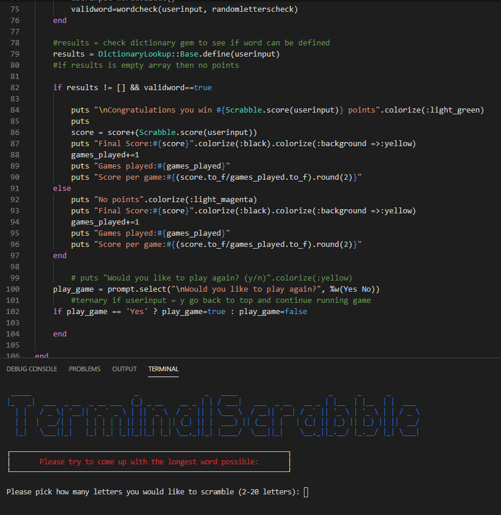

Ruby Terminal Application
-> Github project repo
I worked on a word game application to run in terminal using the Ruby language.
Features: Replay game - a while loop that allows you to continue to play again by selecting either yes/no.
Limited it to just a menu select for yes/no so that user can't enter other commands and inputs are sanitized.
Accruing point system - points earned will carry over to future games in the instance.
Adds the score onto a variable outside the while loop so that the score doesn't get reset each time the game goes
through the while loop.
Vowel adder - if number of letters is greater than 6, add more vowels to make the game easier.
Done through a method that first checks if the word is less than 6 letters and if so will shuffle at least one vowel in,
if the word is greater than 6 letters it'll shuffle at least 2 vowels in. This is done through if/else and shuffling of arrays.
Mismatching letters loop - If user inputs letters that don't equal the output randomized letters then continue running a
while loop that outputs the random letters and prompts them to input letters that match the output randomized letters.
I was initially using delete() but that would delete every instance of a variable and cause errors for words like 'goon'.
Had to delete the specific letter in the array by referencing it's index using .index and also had to make a different array
so that it wasn't deleting the original arrays letters.
Scrabble hash - Calculates score using a scrabble hash which values rarer words higher versus the original idea of using
length of the word. Downloaded a 3rd party ruby file and used require_relative to access it's functionality.
